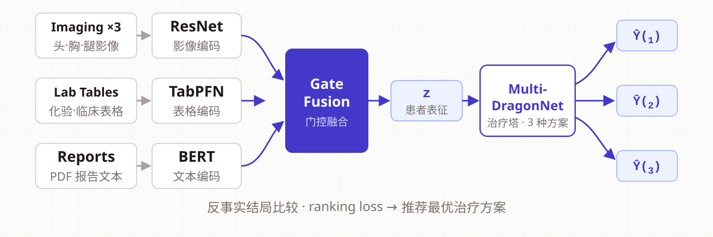

治疗方案因果推荐 · WIP · 2026
Causal Treatment Recommendation · 2026
Some heart patients have three surgical options — but each patient only ever gets one. This research builds an AI that asks: "what if we had chosen differently?"
一些心脏病患者面临三种手术方案——但每个病人永远只会经历其中一种。这项研究造了一个会问「当初如果选另一种会怎样?」的 AI。
For elderly heart patients there is a common minimally invasive surgery — in this cohort it comes in three variants. Doctors choose one — and that's the only outcome anyone ever observes.
一些老年心脏病患者需要接受一种常见的微创手术——在这个队列里,这种手术有三种做法,医生只能选一种——而世上能观察到的,也只有这一种的结果。
The road not taken is invisible. Yet the whole point of a good recommendation is to know what the other roads would have done. That's the counterfactual problem — the heart of causal inference.
没选的那条路,永远看不见。但「推荐」的意义恰恰在于知道别的路会怎样——这就是反事实问题,因果推断的核心难题。
Each patient leaves three kinds of traces: blood-vessel scans (images), the radiologist's written report (text), and lab-sheet numbers (tables). The model reads all three and compresses them into one "digital portrait" of the patient.
每位病人留下三类痕迹:血管影像(图像)、放射科医生写的报告(文字)、化验单(表格)。模型把三者一起读入,压缩成这位病人的一个「数字画像」。

From the portrait, the model outputs a predicted outcome for each of the three options — including the two that never happened — and recommends the best. A special "ranking loss" trains it: when the real treatment worked, the model must rank it above the alternatives; when it failed, it must find something better.
模型从画像出发,对三种方案各自输出一个预测结果——包括从未发生的那两种——然后推荐最好的。一种特殊的「排序损失」负责训练:真实方案有效时,模型必须把它排在别的方案前面;真实方案无效时,模型必须找到更好的替代。
On a small cohort (835 training / 209 test), when the real treatment did help, the model agrees with doctors ~93% of the time. Recognizing that a treatment failed — and suggesting something better — remains the open challenge. Research continues.
在小队列上(835 训练 / 209 测试):当真实治疗确实有效时,模型与医生的选择约 93% 一致;而识别「治疗无效、应换方案」仍是待解难题。研究仍在继续。